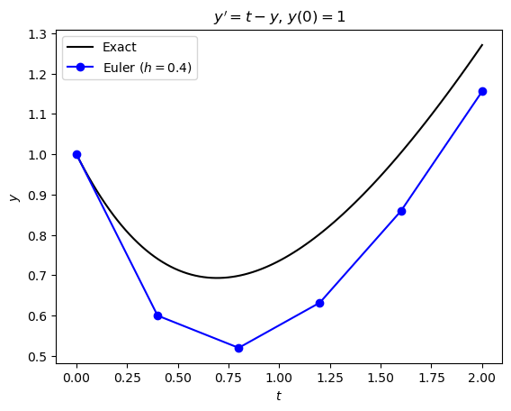
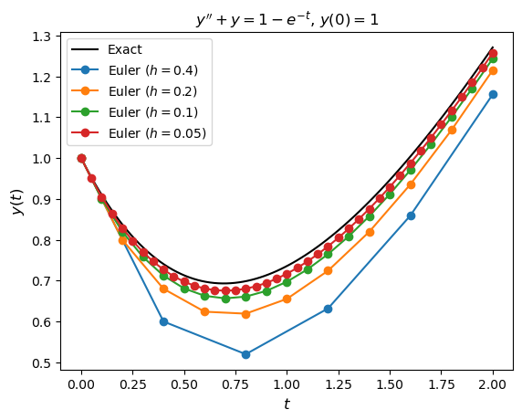
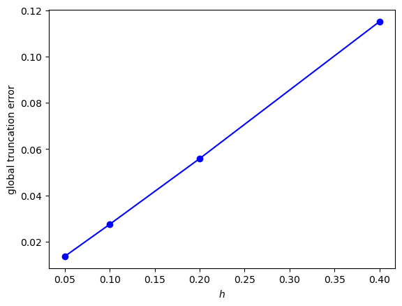
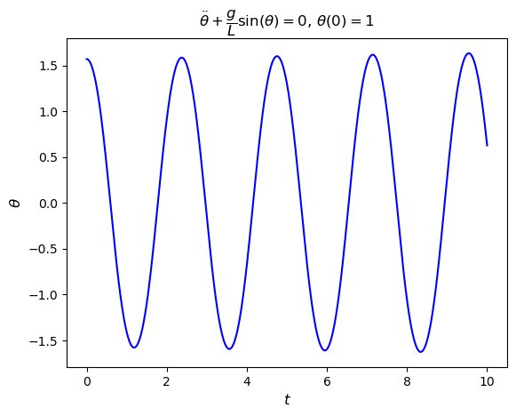
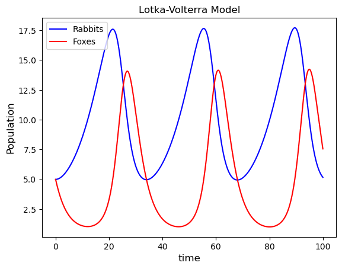

1.5. ODEs Exercises#
Exercise 1.1
An IVP is given by
(a) Using a pen and calculator and working to 4 decimal places, compute the solution to the IVP using the Euler method with a step length of \(h = 0.4\).
Solution
Since \(t \in [0, 2]\) and \(h = 0.4\) then
The Euler method is
and here \(f(t, y) = t - y\), \(t_0 = 0\) and \(y_0 = 1\), then
(b) Repeat part (a) using Python or MATLAB to perform the computations. Produce a plot of the solution \(y\) against \(t\) and the exact solution which is \(y(t) = t + 2e^{-t} - 1\) on the same set of axes.
Solution

import numpy as np
import matplotlib.pyplot as plt
# Define Euler method function
def euler(f, tspan, y0, h):
# Determine the number of ODEs in the system
N = len(y0)
# Calculate the number of steps required
nsteps = int((tspan[1] - tspan[0]) / h)
# Define solution arrays and assign initial values
t = np.zeros(nsteps + 1)
y = np.zeros((nsteps + 1, N))
t[0] = tspan[0]
y[0,:] = y0
# Loop through the steps and calculate the Euler method solution
for n in range(nsteps):
y[n+1,:] = y[n,:] + h * f(t[n], y[n,:])
t[n+1] = t[n] + h
return t, y
# Define ODE function
def f(t, y):
return t - y
# Define exact solution
def exact(t):
return t + 2 * np.exp(-t) - 1
# Define IVP parameters
tspan = [0, 4] # boundaries of the t domain
y0 = [1] # initial values
h = 0.4 # step length
# Solve the IVP using the Euler method
t, y = euler(f, tspan, y0, h)
# Calculate exact solution
t_exact = np.linspace(tspan[0], tspan[1], 100)
y_exact = exact(t_exact)
# Plot solution
fig, ax = plt.subplots()
plt.plot(t_exact, y_exact, "k", label="Exact")
plt.plot(t, y[:,0], "b-o", label="Euler ($h = 0.4$)")
plt.xlabel("$t$")
plt.ylabel("$y$")
plt.title("$y' + y = 1 - e^{-t}$, $y(0) = 1$")
plt.legend()
plt.show()
% Define Euler method
function [t, y] = euler(f, tspan, y0, h)
% Determine the number of ODEs in the system
N = length(y0);
% Calculate the number of steps required
nsteps = floor((tspan(2) - tspan(1)) / h);
% Define solution arrays and assign initial values
t = zeros(nsteps + 1, 1);
y = zeros(nsteps + 1, N);
t(1) = tspan(1);
y(1,:) = y0;
% Loop through steps and calculate the Euler method solution
for n = 1 : nsteps
y(n+1,:) = y(n,:) + h * f(t(n), y(n,:))';
t(n+1) = t(n) + h;
end
end
% Define ODE function and exact solution
f = @(t,y) t - y;
exact = @(t) t + 2 * exp(-t) - 1;
% Define IVP parameters
tspan = [0, 4];
y0 = 1;
h = 0.4;
% Sovle the IVP using the Euler method
[t, y] = euler(f, tspan, y0, h);
% Calculate exact solution
t_exact = linspace(tspan(1), tspan(2), 100);
y_exact = exact(t_exact);
% Plot solution
plot(t_exact, y_exact, 'k', LineWidth=2)
hold on
plot(t, y, "b-o", LineWidth=2, MarkerFaceColor="b")
hold off
xlabel("$x$", Interpreter="latex")
ylabel("$y$", Interpreter="latex")
title("$y' + y = t - y$, $y(0) = 1$", Interpreter="latex")
legend(["Exact", sprintf("Euler (h = %0.1f)", h)])
axis padded
(c) Compute the solution to this IVP using step lengths of \(h = 0.4, 0.2, 0.1, 0.05\). Produce a plot of the four numerical solutions and the exact solution on the same axes.
Solution

fig, ax = plt.subplots()
plt.plot(t_exact, y_exact, "k", label="Exact")
hvals = [0.4, 0.2, 0.1, 0.05]
for h in hvals:
t, y = euler(f, tspan, y0, h)
plt.plot(t, y, "-o", label=f"Euler ($h = {h}$)")
plt.xlabel("$t$", fontsize=12)
plt.ylabel("$y(t)$", fontsize=12)
plt.title("$y'' + y = 1 - e^{-t}$, $y(0) = 1$")
plt.legend()
plt.show()
plot(t_exact, y_exact, 'k', LineWidth=2)
hold on
hvals = [0.4, 0.2, 0.1, 0.05];
legend_labels = ["Exact"];
for h = hvals
[t, y] = euler(f, tspan, y0, h);
plot(t, y, 'o-', LineWidth=2);
legend_labels = [legend_labels, sprintf("Euler (h = %0.2f)", h)];
end
xlabel("$x$", Interpreter="latex")
ylabel("$y$", Interpreter="latex")
title("$y' + y = 1 - e^{-t}$, $y(0) = 1$", Interpreter="latex")
legend(legend_labels, Location="southeast")
axis padded
(d) Calculate the global truncation errors for the four numerical solutions of \(y(t=2)\). Present your results in the form of a table with columns for the value of \(h\), the numerical solution and the global truncation error \(E\).
Hint: you can use the NumPy command idx = np.argmin(abs(t - 2)) or the MATLAB command [~,idx] = min(abs(t - 2)) to determine the index of the value in the array t which is closest to 2.
Solution
| h | Euler | GTE |
|------|----------|----------|
| 0.40 | 3.79936 | 2.53e+00 |
| 0.20 | 4.86547 | 3.59e+00 |
| 0.10 | 5.37676 | 4.11e+00 |
| 0.05 | 5.62644 | 4.36e+00 |
E = []
print("| h | Euler | GTE |")
print("|------|----------|----------|")
for h in hvals:
t, y = euler(f, tspan, y0, h)
idx = np.argmin(abs(t - 2))
E.append(abs(exact(2) - y[idx,0]))
print(f"| {h:4.2f} | {y[idx,0]:8.6} | {E[-1]:8.2e} |")
E = [];
fprintf("| h | Euler | GTE |\n|------|----------|----------|")
for h = hvals
[t, y] = euler(f, tspan, y0, h);
[~, idx] = min(abs(t - 2));
E = [E, abs(exact(2) - y(idx, 1))];
fprintf("| %4.2f | %8.6f | %8.2e |\n", h, y(idx,1), E(end))
end
(e) Produce a plot of the global truncation errors \(E\) against the step length \(h\).
Solution

fig, ax = plt.subplots()
plt.plot(hvals, E, "bo-")
plt.xlabel('$h$')
plt.ylabel('global truncation error')
plot(hvals, E, 'b-o', MarkerFaceColor='b', LineWidth=2)
xlabel("$h$", Interpreter="latex")
ylabel("global truncation error")
axis padded
Exercise 1.2
The motion of a pendulum can be modelled by the following ODE
where \(\theta\) is the angle between the pendulum and the vertical, \(L\) is the length of the pendulum and \(g=9.81\text{ms}^{-2}\) is the acceleration due to gravity.
{kind=link}
A pendulum of length 1 m is intially set so that the angle between the chord and the vertical is \(\dfrac{\pi}{2}\). Use the Euler method with a step length of \(h = 0.001\) to model the first 10 seconds of the motion of the pendulum. Produce a plot of the displacement angle \(\theta\) against \(t\).
Solution
Let \(\theta_1 = \theta\) and \(\theta_2 = \dot{\theta}\) then
Solving this system using the Euler method results in

# Define ODE function
def pendulum(t, y):
return np.array([y[1], -g / L * np.sin(y[0])])
# Define IVP parameters
tspan = [0, 10]
y0 = [np.pi / 2, 0]
h = 0.001
g, L = 9.81, 1
# Solve IVP
t, y = euler(pendulum, tspan, y0, h)
# Plot solution
fig, ax = plt.subplots()
plt.plot(t, y[:,0], "b")
plt.xlabel("$t$", fontsize=12)
plt.ylabel("$\\theta$", fontsize=12)
plt.title("$\\ddot{\\theta} + \\dfrac{g}{L}\sin(\\theta) = 0$, $\\theta(0) = 1$")
plt.show()
% Define ODE
f = @(t, y, g, L) [y(2), -g / L * sin(y(1))];
% Define IVP
tspan = [0, 10];
y0 = [pi / 2, 0];
h = 0.001;
g = 9.81;
L = 1;
% Solve IVP
[t, y] = euler(@(t,y)f(t, y, g, L), tspan, y0, h);
% Plot solution
plot(t, y(:, 1), "b-", LineWidth=2, MarkerFaceColor="b")
xlabel("$t$", Interpreter="latex")
ylabel("$\theta$", Interpreter="latex")
title("$\dot{\theta} + \frac{g}{L}\sin(\theta) = 0$, $\theta(0) = 1$", Interpreter="latex")
axis padded
Exercise 1.3
The Lotka-Volterra equations is a model of predator-prey interactions
where \(x\) and \(y\) are the population densities of the prey and predator species respectively, \(a\) and \(b\) are the parameters that govern the birth and death rate of the prey species, and \(c\) and \(d\) are parameters that govern the birth and death rates of the predator species.
In a given square kilometer the population of rabbits (\(x\)) and foxes (\(y\)) is known to be \(x(0) = y(0) = 5\). Given the the birth and death rates is 0.1 and 0.02 for the rabbit population and 0.4 and 0.04 for the fox population, use the Lotka-Volterra to model the population of the two species over a time frame of \([0, 100]\) using a step length of \(h = 0.01\). Produce a plot of the population of both species on the same set of axes.
Solution

# Define Lotka-Volterra equations
def lotka_volterra(t, y):
return np.array([a * y[0] - b * y[0] * y[1], -c * y[1] + d * y[0] * y[1]])
# Define the IVP
tspan = [0, 100]
y0 = [5, 5]
h = 0.01
a, b, c, d = 0.1, 0.02, 0.4, 0.04
# Solve the IVP
t, y = euler(lotka_volterra, tspan, y0, h)
# Plot solution
fig, ax = plt.subplots()
plt.plot(t, y[:,0], "b", label="Rabbits")
plt.plot(t, y[:,1], "r", label="Foxes")
plt.legend()
plt.xlabel("time", fontsize=12)
plt.ylabel("Population", fontsize=12)
plt.title("Lotka-Volterra Model")
plt.show()
% Define Lotka-Volterra equations
lotka_volterra = @(t, y, a, b, c, d) [
a * y(1) - b * y(1) * y(2) ;
-c * y(2) + d * y(1) * y(2)
];
% Define the IVP
tspan = [0, 100];
y0 = [5, 5];
h = 0.01;
a = 0.1;
b = 0.02;
c = 0.4;
d = 0.04;
% Solve the IVP
[t, y] = euler(@(t, y)lotka_volterra(t, y, a, b, c, d), tspan, y0, h);
% Plot solution
plot(t, y(:, 1), 'b', LineWidth=2)
hold on
plot(t, y(:, 2), 'r', LineWidth=2)
hold off
xlabel("time")
ylabel("Population")
title("Lotka-Volterra Model")
legend(["Rabbits", "Foxes"], location="northwest")
axis padded